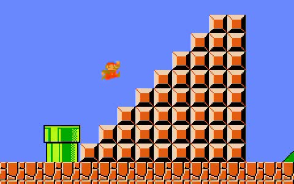
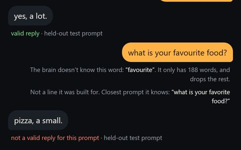
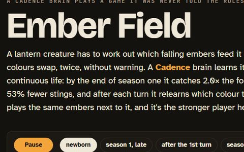
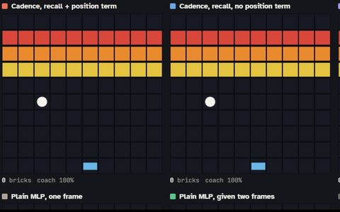
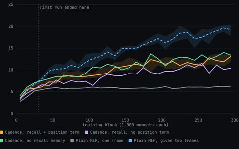

CADENCE ARCADE
Cadence (cadence-net, by Pragma Research) is a brain-like learning library: regions of neurons that settle on every answer and learn with a local rule, no backprop. These are independent experiments that put it in games and report what actually happened, misses included.

One brain beat all of World 1 in a single 5-life gauntlet
Brain W1b cleared 1-1, 1-2, 1-3 and 1-4 (Bowser) back to back with the same weights, alone from the screen. Not consistent yet: 7 to 27 clears per level on 50 held-out starts.
Clips, brains and scoreboard →
Brain scope
Scrub through solo runs and see the brain's real recorded neuron activity at every decision, or poke it to see what each move depended on.
Open the scope →
Mario, level by level
One brain plays the levels in order, learning as it goes. At first sight of a new level it never beat the best simple baseline.
Results →
Chat
Text one Cadence brain on a toy 188-word grammar. 83% valid replies on held-out prompts; a plain MLP gets 95%.
Chat with it →
Ember Field
Learn which embers feed and which sting, then the colours swap. The Cadence brain relearns after each turn; a plain neural net is the stronger player here.
Watch the replay →
One-Frame Breakout
One frame at a time, so the ball's direction is hidden. The new recall position term didn't help as shipped (6 seeds better, 6 worse).
Replay and verdict →
Breakout, 10x longer
The same Breakout players trained 10x longer. Cadence keeps climbing; the two-frame MLP pulls ahead.
Results →Older Mario pages: the first 1-1 run (10/28-29, replay and learning curve) and watch it as plain video.